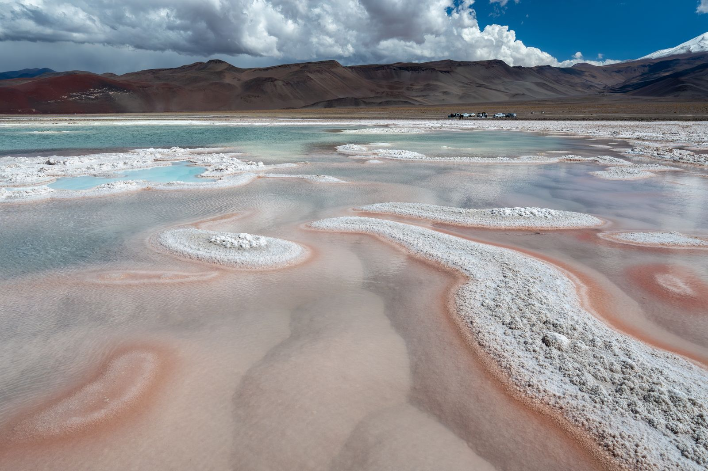
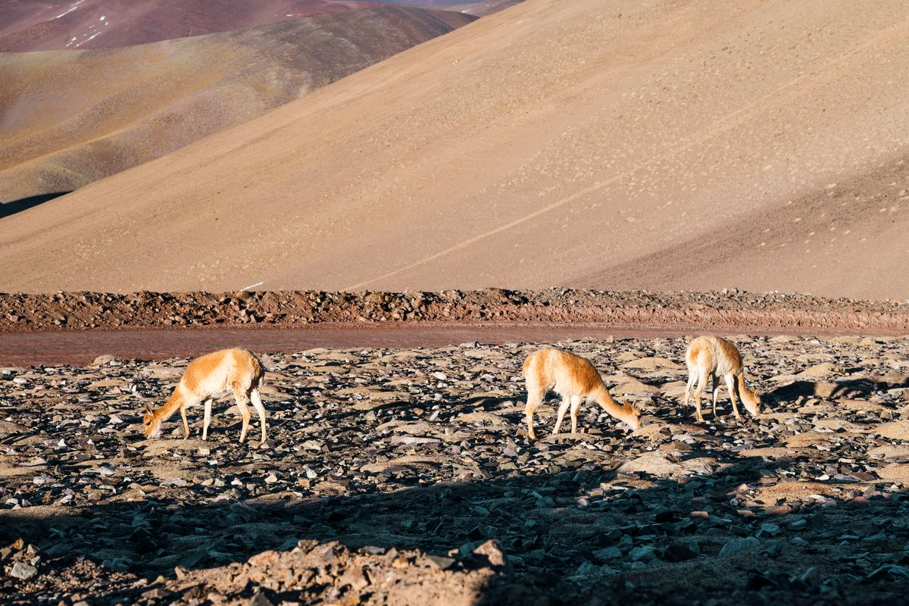

Salares y volcanes
El Salar de Antofalla y los volcanes que rodean la cuenca, en toda su escala.
Excursiones turísticas
Recorremos Antofagasta de la Sierra: salares, volcanes y lagunas altoandinas. Paisajes que no se olvidan.
Qué recorremos
El Salar de Antofalla y los volcanes que rodean la cuenca, en toda su escala.
Espejos de agua a más de 3.500 msnm, con flamencos y colores que cambian con la luz.
Un paisaje esculpido por el viento, único en la Puna argentina.
Salidas pensadas para la luz de amanecer y atardecer en la Puna.
Vicuñas, guanacos y aves altoandinas en su ambiente natural.
Armamos la excursión según tus tiempos y tu grupo.
Contanos por WhatsAppLa región
Un pueblo en el corazón de la Puna catamarqueña, a más de 3.300 msnm. Desde ahí salimos a recorrer salares, volcanes y lagunas que parecen de otro planeta.

Colores que sorprenden
La combinación de sal, minerales y altura pinta cada espejo de agua de un color diferente.
Coordinar excursión
Por qué elegirnos
Somos de la zona y recorremos estos caminos hace años. Sabemos dónde parar, a qué hora ver cada lugar y cómo cuidar el paisaje que nos recibe.
Planeamos tu excursión
Escribinos por WhatsApp o seguinos en redes para ver más de la región.